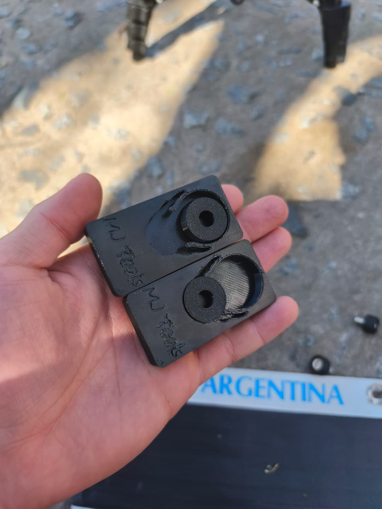
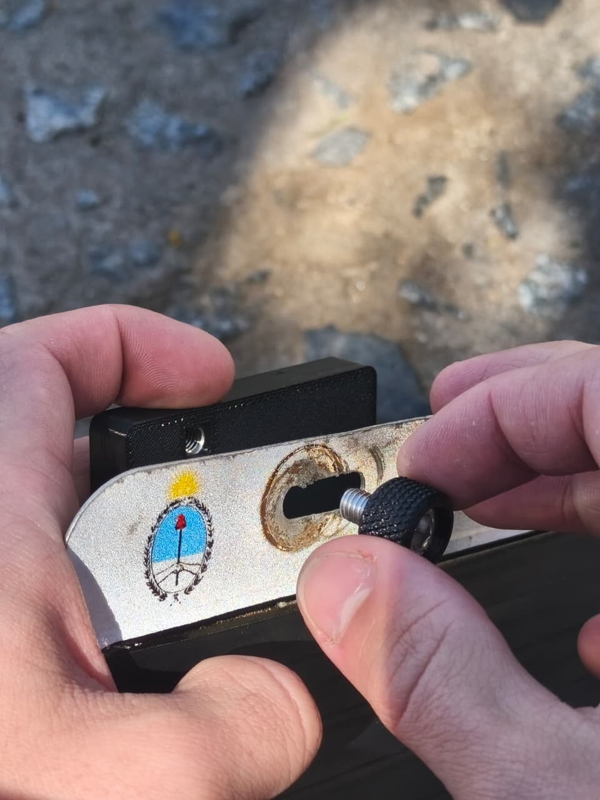
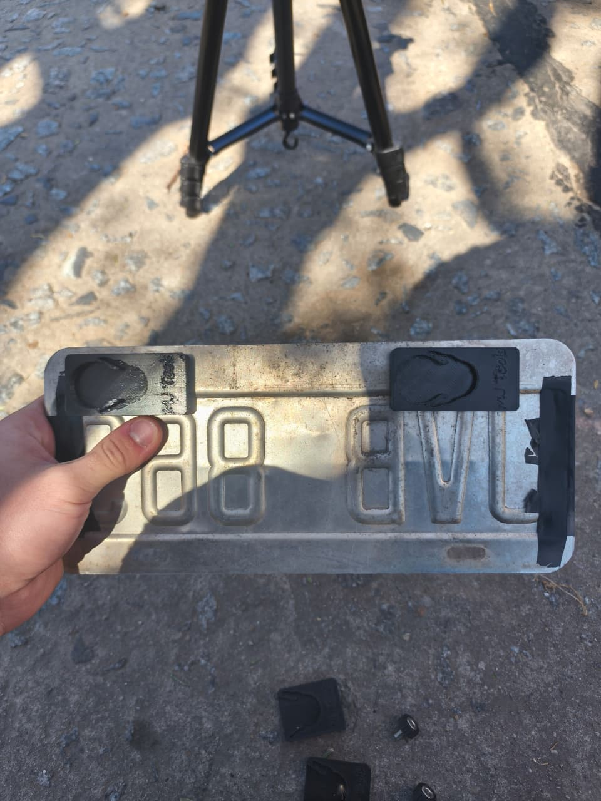
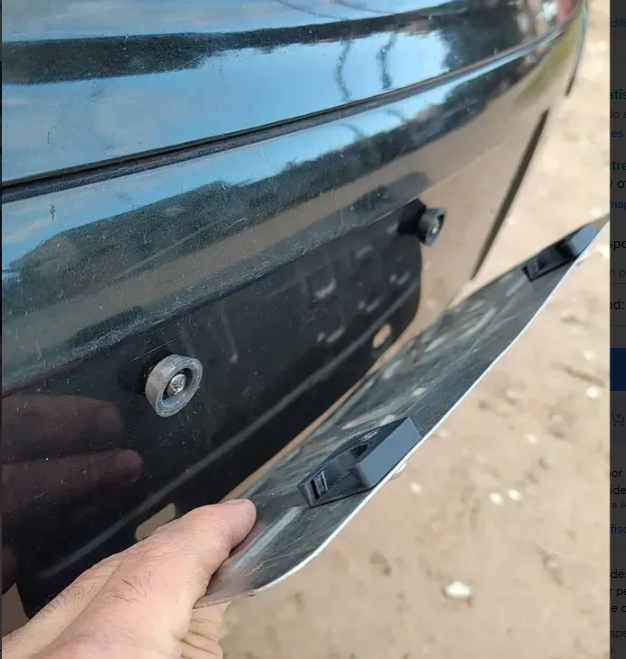
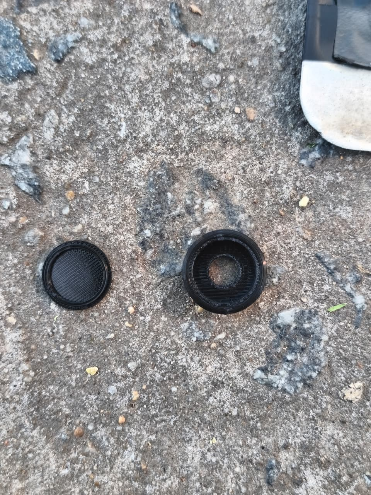

Paso 1
Sacar el tope deslizante
Retirá con cuidado el tope deslizante del portapatente para liberar el mecanismo.

Paso 2
Atornillar el bloque a la patente
Fijá firmemente el bloque principal a tu chapa patente utilizando los tornillos correspondientes.

Paso 3
Alinear
Presentá y alineá correctamente el conjunto antes de realizar el ajuste definitivo en el auto.

Paso 4
Poner los topes deslizantes en el auto
Instalá las bases en el paragolpes del vehículo para que queden listas para recibir la patente.


Paso 5
Instalar deslizando
Una vez fijados los topes, deslizá el conjunto de la patente sobre ellos hasta que calce y quede firme.
Imagen ilustrativa próximamente.